Workzone¶
RL Catalyst Workzone is an option all the settings take action. Workzone has below options:
- Infrastructure:
- Instances : It displays the numbers of instances that currently launched and running.
- Blueprints : This options allows you to launch instances.
- Cloud Formation : It displays the list of stacks launched from cloud formation blueprints.
- AzureARM: It displays the list of Deployments launched from Azure ARM Blueprints.
- Containers : Container details launched from docker blueprints.
Orchestration: This options allows you to execute one or more tasks/actions on multiple nodes.
Applications: Here user can deploy new applications and deployed applications will be shown in card or table view will all details.
Here user can deploy new applications and deployed applications will be shown in pipeline view and table view with all details.
Launch New Instances¶
Instances are launched from Blueprints. Follow below steps to launch Instances from blueprints.
- Go to Workzone → Click on Infrastructure drop down → Choose Blueprints

- Select the Blueprint and click on Launch button. Once the ‘Launch’ button is clicked, the instance will be launched in 5-8 minutes
- Go to Instances tab to view the launched instance

- View Instances in Table View
RL Catalyst on the Instances page provides you two kinds of views.
- Grid View[Above Image]
- Table View[Below Image]
You can click on the respective button to view the instances.

- Instance Actions:
On the launched instance user can perform below actions.
- Chef Client Run
- SSH
- Stop / Start
- MoreInfo
- Chef Client Run option allows you to update the Chef Client Runlist. You can add new software to the Runlist and click on Update
- SSH, this option allows you to open the command prompt Terminal. You can execute your commands directly using this option
- Stop, This option allows you to start and stop an Instance
- More Info, This option displays the information about the Instance. You can view the logs of the Instance
Update Configuration¶
Any extra action on the running instance can be performed via the Chef client Run icon, which is displayed at the bottom left corner. Installing new software, upgrading a software etc can be performed using this icon.
A Cookbook is the fundamental unit of configuration and policy details that Chef uses to bring a node into a specific state. This just means that Chef uses cookbooks to perform work and make sure things are as they should be on the node.
A Role is a way to define certain patterns and processes that exist across nodes in an organization as belonging to a single job function. Each role consists of zero (or more) attributes and a run-list. Each node can have zero (or more) roles assigned to it.
A Run-list defines all of the information necessary for Chef to configure a node into the desired state.
A Template is user defined skeleton structure which helps the user to add Cookbooks,Roles that can be runned on the Instance, which you created in Settings.
Follow below steps to run chef client run:
- Click on Chef client run icon
From here you can add Roles, Cookbooks [Present in your chef server] and Templates [Created in Settings] to the Runlist.

- Select any cookbook and move to Runlist by clicking > icon
- Click on Update button.
- Click OK on confirmation popup to update runlist

- Instance Logs window will be displayed to see the logs

- Click on Close button to close the Instance logs window
Connect to the Instance¶
Follow below steps to connect to Instance:
- Click on the SSH icon present on the instance
- Enter the Username of the Instance
- Select the authentication type by selecting password / pem file
- Enter the Password or Browse the Pem file

- Click on Submit button

Following video demonstrates how to Launch Blueprint, Update Configuration and Connect to the Instance in RLCatalyst:
Start Instance¶
Catalyst allows you to start the instance which is already stopped.
Follow below steps to start the Instance:
- Click on the Start icon of the stopped instance
- Instance will be started and turn to Green color. Chef Client , SSH button will be enabled

Stop Instance¶
Catalyst allows you to stop the instance which is already Running.
Follow below steps to stop the Instance:
- Click on the Stop icon present on the instance
- Click OK on confirmation popup

- Instance status is showing as stopped and red icon will be shown
Note: User can perform stop / start action only for the launched node from catalyst.
Note: For the imported node from IP address Stop button will be grayed out will be shown later.
Note: For the Stopped Instance, Chef client SSH buttons will be disabled.

Import By IP¶
In the Instances page, you can import any running instances to the catalyst application using Import By IP option, follow the below steps to import:
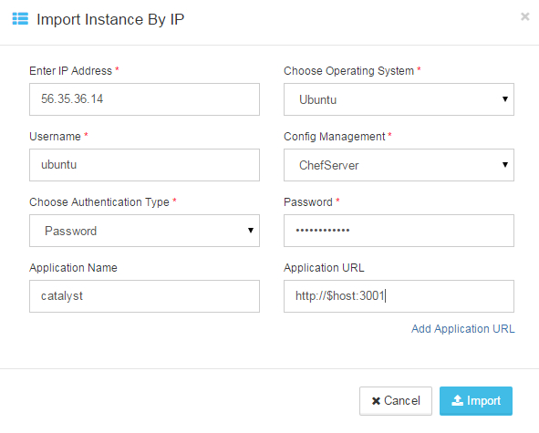
- Click on Import by IP icon
- In the Import Instance By IP window
- Provide the IP address which needs to be Imported
- Choose the operating system from Choose Operating System drop down list
- Provide the user name in the Username box
- Choose authentication type from the Choose Authentication Type drop down list. RL Catalyst provide two types of authentication, you can choose Password or by uploading PEM file
- Type Password or upload PEM file
- Provide the application name in the Name box and the host URL in the URL box
- You can also Add new application by clicking on the Add Application URL option
- Click Import to start importing the Instance
- Node will be imported and displayed in the instances tab. For the imported node Stop button will be disabled

Following video demonstrates how to Import a Node by IP Address and connect to Instance from RLCatalyst:
Cloud Formation Templates¶
Follow below steps to launch Cloud formation blueprints:
- Go to Workzone → Click on Infrastructure dropdown → Select Blueprints option → Click on ‘Cloud Formation’ template type

- Select the cloud formation blueprint and click on Launch button
- Enter the Unique Stack Name in the popup window

- Click on Submit button
- Confirmation pop will be displayed with Stack ID

- Close the popup
- Go to Infrastructure - > Cloud Formation , the CFT stack will be listed

- Go to Instances tab to see the launched Instance
Docker Blueprints¶
Follow below steps to launch docker blueprints:
- Go to Workzone → Click on Infrastructure dropdown → Select Blueprints option → Click on ‘Docker’ template type

- Select the docker template which is listed and click on Launch button
- Click OK on the Confirmation popup
- Click Next button in the Launch docker blueprint window

- Select the node on which you are going to launch docker blueprint and click on Start button

- Logs window will be displayed and wait until the installation successfull
- Go to Infrastructure - > Containers tab, the container details will be listed

Following video demonstrates how to Configure Docker and Launch Containers in RLCatalyst:
Control Panel¶
The Control Panel option displays the detailed information on the selected Instance . It displays information such as Blueprint Information , Hardware information, Software Information, Configuration Management, Additional Parameters, Services, Actions and Logs.

Inspect Software
Inspect functionality allows user to know the installed software on the Instance.
- Go to Instance Control panel
- Click on Inspect Software button
- Popup is displayed to know the installed software on the instance

Convert to Workstation
- Go to Instance Control panel → Services tab
- Click on ‘Convert To Workstation’ button
- Click on ‘OK’ button
- Confirmation pop up is displayed saying ‘Your workstation has been setup successfully. The .chef folder is available in Home’.

- Click on OK button to close the popup
View Action History
Action history feature allows user to view the history of the actions performed on the Instances with complete details.
- Go to Instance Control panel
- Click on Action History tab

Orchestration¶
Orchestration option allows you to execute one or more tasks/actions on multiple nodes.
Chef Task
- Go to your respective Environment, click on Orchestration
- To add a new task click on the New button
- Select the task type from the Select Task Type drop down list (Chef)
- Enter a task name in the Task Name box
- Select the nodes from the Select Nodes list for which you want to assign task
- Click on Edit Runlist icon and add cookbooks to the runlist
- Click on Update runlist button
- You can also select the Cookbook Attributes

- Click Save button to save the task
- The task is added to the Orchestration list

Following video demonstrates how to create and run Chef Task in RLCatalyst:
Jenkins Task
- Go to your respective Environment, click on Orchestration
- To add a new task click on the New button
- Select the task type from the Select Task Type drop down list (Jenkins)
- Enter a task name in the Task Name box
- Select the server from the Select Jenkins Server drop down list
- Select the job from the Select Job drop down list
- Select the Auto synch button to ‘Yes’ [ This will show previously existing task execution history]. If you set to ‘NO’ previously existing task history will not be shown
- Job URL - The selected job url will be shown here
- Add Job Links for the Jenkins task - You can add external links to view the results

- Click Save button to save the task
- The task is added to the Orchestration list

- Edit or Remove a Task
You can edit or remove a task. Follow the steps below.
- Click on Edit button to edit a task from the Orchestration list
- Click on Delete button to remove a task from the Orchestration list
Execute Task
You can execute a task (Chef and Jenkins) by clicking Execute button in the list of tasks page.
Once you execute the task, Execute logs window will pop-up shows the status of the execution.
Task History
You can view the task history by clicking the History button in the list of tasks page. Once you click on the history button, Task History window will pop-up and shows the history of the task.
The following information is shown in the history of task:
- Job number
- Job output links including logs info
- Status
- Start time
- Endtime
- Logs

Following video demonstrates how to create and execute Jenkins Task in RLCatalyst:
Application Deployment¶
RLCatalyst makes your application deployments easy through its Orchestration feature. The artifacts or the build files can be sourced from Nexus or Docker repositories and you can deploy into single or multiple instances. The deployments happens through Jenkins or Chef based tasks , that can be configured from RLCatalyst.
Prerequisites:
- A repository (Nexus/Docker) should be added from Settings
- Repository should be attached to one or more projects.
- There should be connectivity between the repository, the target instances and the RLCatalyst instance
- There should be to & fro connectivity between RLCatalyst and the target instance
If you have not added a repository in Settings, follow the instructions at Nexus Server.
Once Nexus Server is configured you have to associate Repository details to your Project.
CASE I: First time a new application has been deployed and it is deployed using Catalyst
Follow the below steps :
- Go to Projects Page
- Edit your Project
- Click on + icon present next to Repository Details
- Select your Repository Server and Repository Name
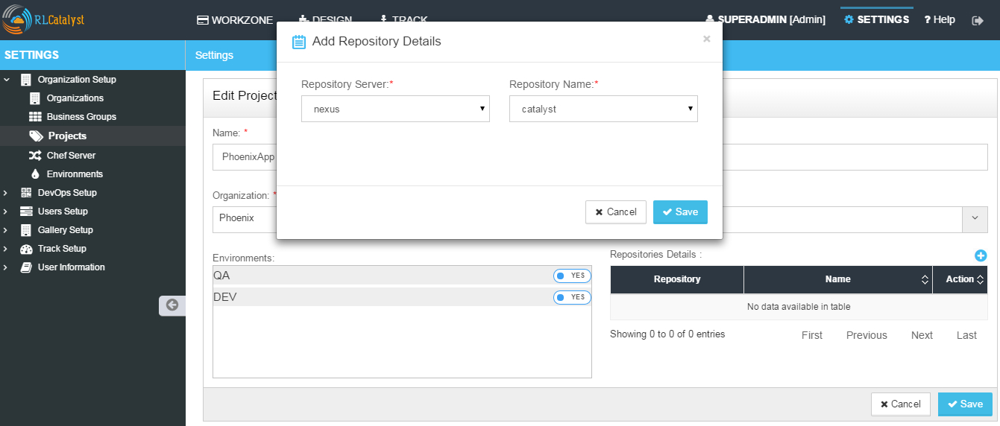
- Click on Save button on Add Repository Details page
- Click on Save button on Edit Project Page
App Blueprint¶
Once you associate repository details to your project now start creating blueprint. Follow the below steps:
- Go to Design
- Select Software Stack Template Type and click Next
- Select any Template and click Next
- Configure Provider Parameters by selecting all provider parameters
- Configure Organization Parameters by selecting
- Configure Runlist Parameters by adding deploy_upgrade_catalyst cookbook
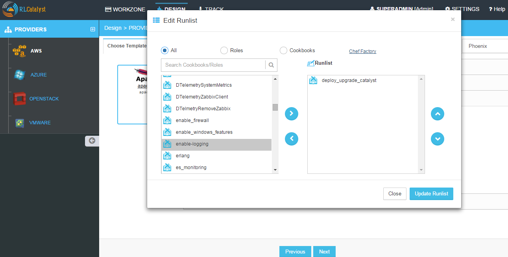
- Click on Update Runlist
- Expand Configure Application
- Select Deploy app during Bootstrap checkbox
- On selecting checkbox all Repository details will autopopulate and the latest version will be always selected. [Note: If you select previous version also by default it will take latest version]
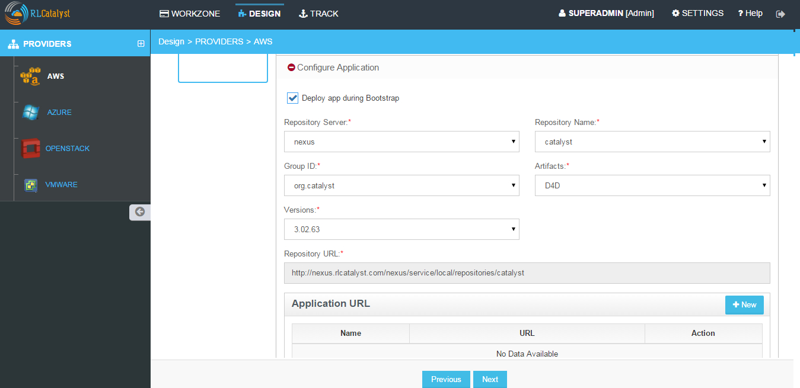
- If you want to specify the URL at which the application is running, specify the URL in the format http://$host:3001
- Click on Next button
- Click OK button in Confirm popup window
- Blueprint Saved Successfully message is displayed

Launching Blueprint¶
- Go to Workzone
- Click Infrastructure dropdown and Select Blueprints tab
- Expand Software Stack
- Select the Instance and Click on Launch button
- Go to Instances tab and you can see node will be launched and wait until bootstrap is successfull
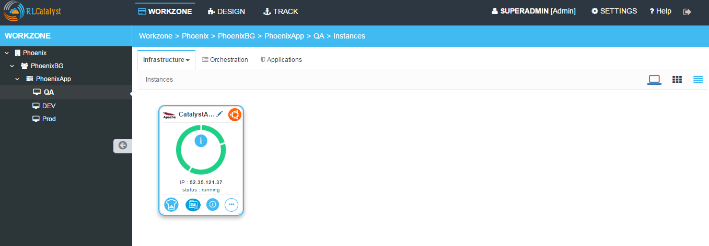
- Go to Applications tab
- You will see the Application details with Name, Version, IP Address of the node and Time
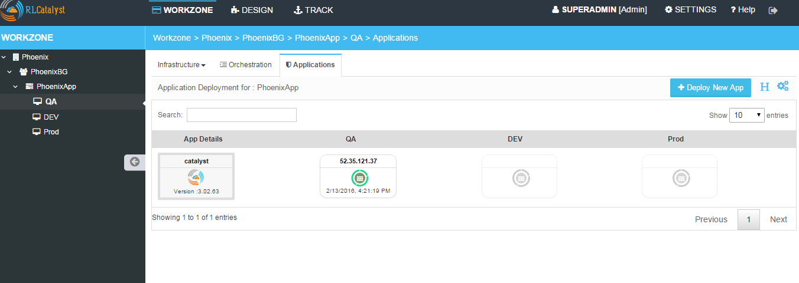
- Now copy the IP address where application is deployed and open new tab and paste IP address with port number. [Eg: 52.35.121.37:3001 ]
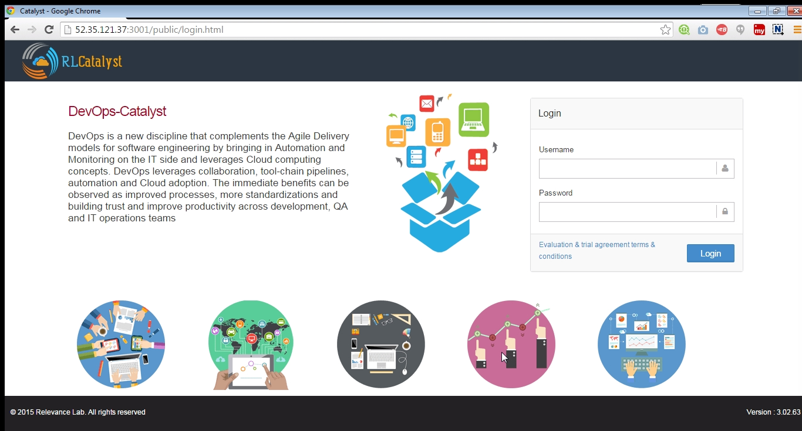
- Now Catalyst application is installed with the version 3.02.63 on the launched node. [See the version at bottom right corner of the window]
Deploy New App¶
Now I will show you how to upgrade latest version of catalyst application on the same node.
- Go to Applications tab
- Click on Deploy New App button
- Enter the Repository details by selecting latest version [ Here latest is 3.02.64]
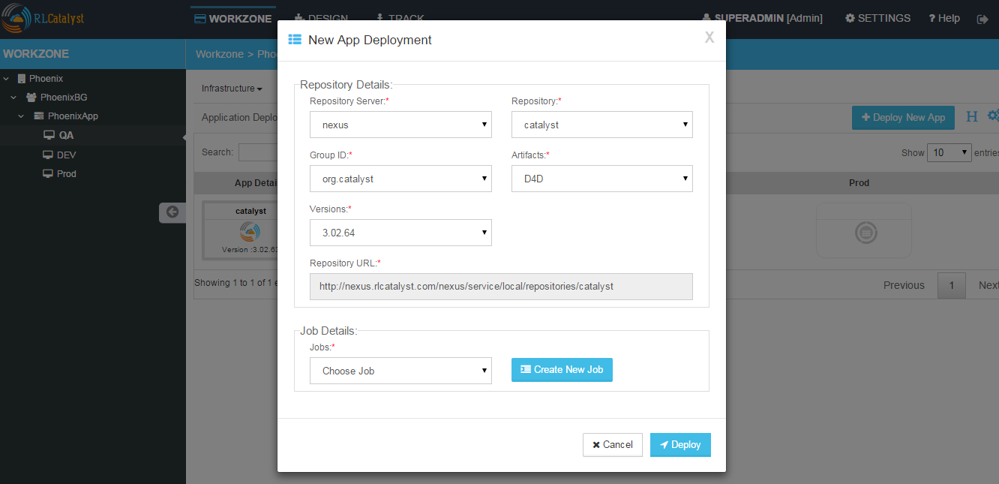
- Click on Create New Job button
- Enter the Job name
- Select the Node on which you are going to upgrade latest version
- Add the cookbook deploy_upgrade_catalyst to the runlist
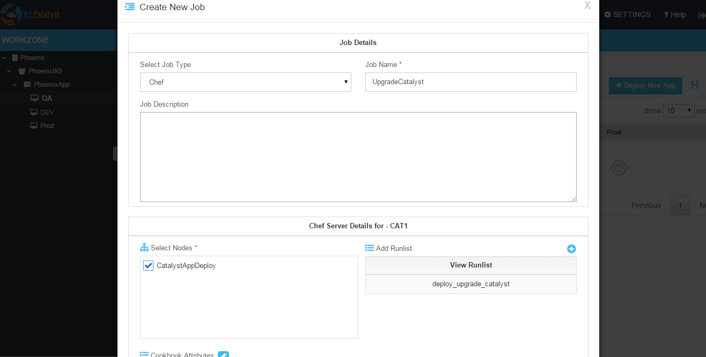
- Click on Save button
- Click OK button on Task Success popup window
- Click on Jobs dropdown
- Select the Job which is created in previous step
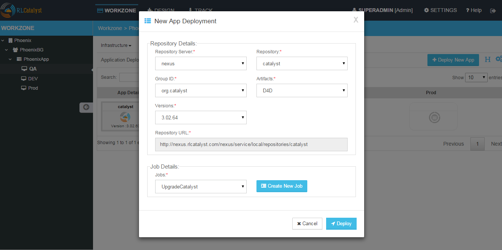
- Click on Deploy button
- Click OK button on Confirmation popup window
- Execute Logs window will open and wait until Task execution is successful

- Close Execute Logs window
- Now you can see Applcation card is displayed with Application details with Name, Version [3.02.64], IP address of the node and Time
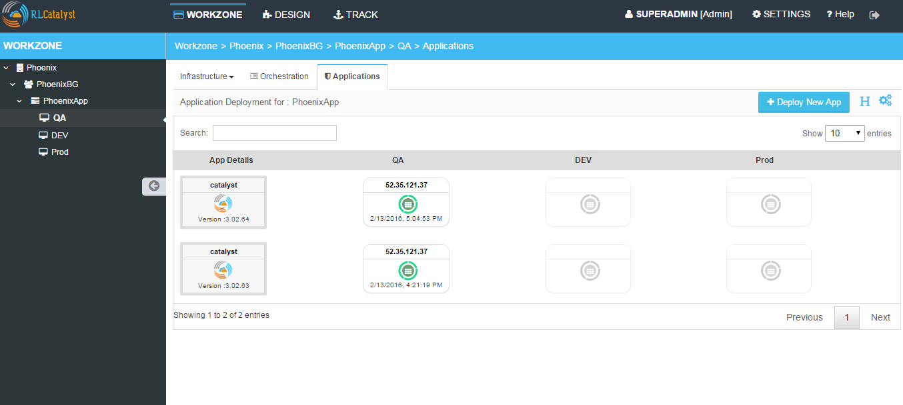
- Now copy the Ip Address where application is deployed and open new tab and paste Ip Address with port number. [Eg: 52.35.121.37:3001 ] and verify the latest version [3.02.64] of the application is deployed on the node in right bottom corner of the window
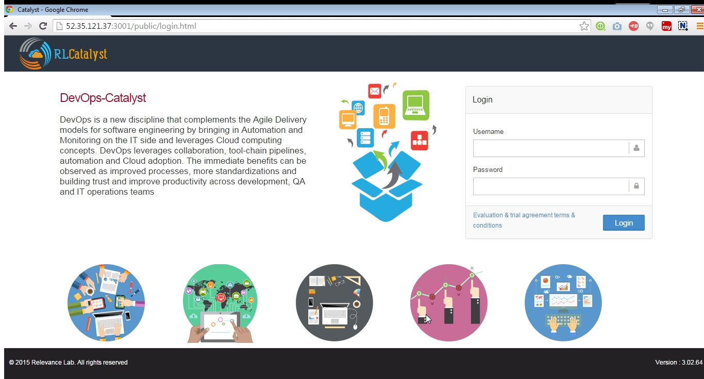
CASE II: User has the application(s) running over several exisitng environments and all the application details must be imported to Catalyst
Pre-requisite: 1) The http/https request ports need to be open from the server for catalyst to get the information 2) Target instance(Application instance) must be part of Catalyst env that means that particular machine has been imported to the particular environment 3) Jenkins job must be associated for that particular ip/instance, the job parameters must be application name, nodeip, env, version, apptype, containerid, containeport etc.
Please specify the following piece of code in the jenkin’s Job for deployment to see the Application cards in Catalyst.
# Code for App Deployment history information via jenkins
exitStatus=$? export APPSTATUS if [ $exitStatus -eq 0 ] then
echo “Successfull” APPSTATUS=”Successfull”
- else
- echo “Failure” APPSTATUS=”Failure”
fi echo $APPSTATUS export APPVERSION=”###<specify the major version>” echo $APPVERSION export LASTDEPLOY=”$(date +’%y-%m-%d %r’)” echo $LASTDEPLOY export IP=”$(hostname -I)” export THISHOST=”$(hostname)” export APPINSNAME=”Application name” export applicationNodeIP=”XXX.XXX.XXX.XX” e.g. 192.168.105.22
#Send the information for Catalayst Application tab
curl -X POST -H “Content-Type: application/json” -d ‘{“appDeployData”: {“applicationNodeIP” : “192.168.105.22”,”applicationName”: ” Application name ”,”applicationInstanceName”: “’”$APPINSNAME”’”,”applicationVersion”: “’”$APPVERSION”’”,”applicationNodeIP”: “’”$IP”’”,”applicationLastDeploy”: “’”$LASTDEPLOY”’”,”applicationStatus”: “’”$APPSTATUS”’”,”applicationType”: “Package”,”containerId”: “”,”hostName”: “’”$THISHOST”’”,”appLogs”: “’”http://jenkinsip:port/job/$JOB_NAME/$BUILD_NUMBER/console“’”,”envId”: “QA”}}’ http://catalyst:ipaddress:port/app/deploy
Following video demonstrates how to do AppDeploy in RLCatalyst: